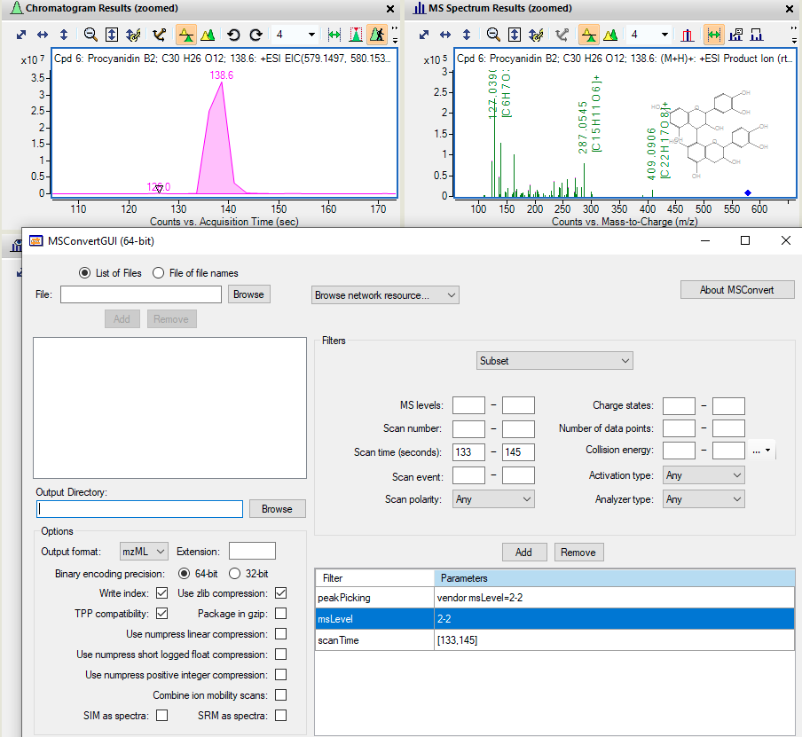

MS2extract Part 4 - Using MSconvert to filter useful MS/MS data
Goal of this document
In this document, you will find more information describing multiple scenarios about how to use MSconvert in order to transform your raw MS/MS data to .mzMl or mzXML format in order to be imported with MS2extract.
Here, we will explore three different scenarios that you might find useful depending on your MS/MS data collection approach. The explained scenarios are:
- Converting to .mzML the entire run,
- Trimming for specific retention time, and
- Extracting MS/MS scans of multiples CE from the same run
*Note:* this is the fourth vignette for this package and if you find some terms unclear, or are not familiar with the concepts, please visit the previous vignettes (Package introduction, Batch mode introduction, and Importing MS/MS data).
#Concept of MS2extract
Before moving to the hands-on application, we would like to clarify some definitions about this software that could help improve the explanation of the following case examples.
The MS2extract concept can be summarized in two main subsequent tasks; (1) look for scans with a specific precursor ion m/z, and (2) extract the MS/MS fragmentation pattern.
Therefore, your data file (.mzML) must contain at least one MS/MS scan with the specified precursor ion to extract the MS/MS data.
Case 1: Converting to .mzML the entire run
In this case, although is not the optimal approach, it will get the job done, if your data meets a requirement.
Requirement: the precursor ion of your standard has to produce the most intense MS/MS signal in the entire run.
Requirement: If you have isomers in the same run, but they elute at different retention times, you must provide different retention times windows.
Since MS2extract searches for the most intense MS/MS scan, you can only have one metabolite per run if you do not provide different retention time windows.
Since this package only works with MS/MS data, we are only going to keep scans with MS/MS data. Therefore, the MSconvert filters are:
| Filter | Parameters |
|---|---|
| peakPicking | vendor msLevel=2-2 |
| msLevel | 2-2 |
Case 2: Trimming for specific retention time
This is probably the most efficient approach to convert your raw data files, since you already know the retention time of your metabolite. Then, you can use the scanTime filter. Remember, scan time has to be converted to seconds, not minutes.
We used this approach to build the entire PhenolicsDB repository, where you can find the retention time window for each metabolite.
| Filter | Parameters |
|---|---|
| peakPicking | vendor msLevel=2-2 |
| msLevel | 2-2 |
| scanTime | [min rt, max rt] |
In the following example, we are using the procyanidin B2 standard data, with a elution time of 138 (s), and the minimum and maximum retention time are 133 and 145 (s), respectively. Therefore, the MSconvert task will look like the following image.

Case 3: Multiple CE in the same run
Unfortunately, the current version of MS2extract does not support importing MS/MS data with different CE in the same run. Then, the user will need to manually separate different CE in different files as it is explained below.
For this example, we are going to use guaijaverin (quercetin 3-arabinopyranoside) to exemplify this case. In the following image, you can see the EIC of this metabolite in negative polarity. Then, the first MS/MS spectra refers to the fragmentation pattern at 60 eV, while the second MS/MS spectra refers to 80 eV.

Now, in order to separate scans in MSconvert we need to specify one CE at a time. Here, you can see that we are using the collisionEnergy filter to subset MS/MS scans with a CE of 60 eV. Then, the filters for this metabolite will be:
| Filter | Parameters |
|---|---|
| peakPicking | vendor msLevel=2-2 |
| msLevel | 2-2 |
| scanTime | [min rt, max rt] |
| collisionEnergy | low=60 high=60 |
Once you convert this raw data file to mzML at 60 eV, you can change the collision energy to a different value and then convert for the rest of available CE values. The same principle can be applied for MS/MS data with multiple polarities in the same run.
Note: remember to change the .mzml file name as it will overwrite the file with the new CE value.